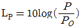
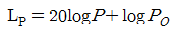
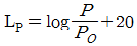
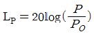
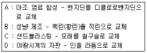
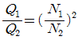
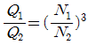
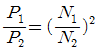
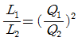

산업위생관리산업기사 (2020-06-06 기출문제)
1과목: 산업위생학 개론
1. 정교한 작업을 위한 작업대 높이의 개선 방법으로 가장 적절한 것은?
- 팔꿈치 높이를 기준으로 한다.
- 팔꿈치 높이보다 5cm 정도 낮게 한다.
- 팔꿈치 높이보다 10cm 정도 낮게 한다.
- 팔꿈치 높이보다 5~10cm 정도 높게 한다.
(정답률: 74%)

2. 상시근로자가 100명인 A사업장의 지난 1년간 재해통계를 조사한 결과 도수율이 4이고, 강도율이 1이었다. 이 사업장의 지난해 재해발생건수는 총 몇 건이었는가? (단, 근로자는 1일 10시간씩 연간 250일을 근무하였다.)
- 1
- 4
- 10
- 250
(정답률: 64%)
3. 피로를 가장 적게 하고 생산량을 최고로 증대시킬 수 있는 경제적인 작업속도를 무엇이라고 하는가?
- 부상속도
- 지적속도
- 허용속도
- 발한속도
(정답률: 70%)
4. 산업안전보건법령상 역학조사의 대상으로 볼수 없는 것은?
- 건강진단의 실시결과 근로자 또는 근로자의 가족이 역학조사를 요청하는 경우
- 근로복지공단이 고용노동부장관이 정하는 바에 따라 업무상 질병 여부의 결정을 위하여 역학조사를 요청하는 경우
- 건강진단의 실시 결과만으로 직업성 질환에 걸렸는지를 판단하기 곤란한 근로자의 질병에 대하여 건강진단기관의 의사가 역학조사를 요청하는 경우
- 직업성 질환에 걸렸는지 여부로 사회적 물의를 일으킨 질병에 대하여 작업장 내 유해요인과의 연관성 규명이 필요한 경우로 지방고용노동관서의 장이 요청하는 경우
(정답률: 80%)
5. 직업병이 발생된 원진레이온에서 원인이 되었던 물질은?
- 납
- 수은
- 이황화탄소
- 사염화탄소
(정답률: 67%)
6. 산업안전보건법령상 보건관리자의 업무에 해당하지 않는 것은?
- 사업장 순회점검, 지도 및 조치 건의
- 위험성평가에 관한 보좌 및 지도ㆍ조언
- 물질안전보건자료의 게시 또는 비치에 관한 보좌 및 지도ㆍ조언
- 산업안전보건관리비의 집행 감독 및 그 사용에 관한 수급인 간의 협의ㆍ조정
(정답률: 73%)
7. 누적외상성질환의 발생과 가장 관련이 적은 것은?
- 18℃이하에서 하역 작업
- 진동이 수반되는 곳에서의 조립 작업
- 나무망치를 이용한 간헐성 분해 작업
- 큰 변화가 없는 동일한 연속동작의 운반 작업
(정답률: 63%)
8. 만성중독 시 나타나는 특징으로 코점막의 염증, 비중격천공 등의 증상이 나타나는 대표적인 물질은?
- 납
- 크롬
- 망간
- 니켈
(정답률: 81%)
9. 직업병을 일으키는 물리적인 원인에 해당되지 않는 것은?
- 온도
- 유해광선
- 유기용제
- 이상기압
(정답률: 69%)
10. 산업안전보건법령에 의한「화학물질 및 물리적인자의 노출기준」에서 정한 노출기준 표시단위로 옳지 않은 것은?
- 증기 : ppm
- 고온 : WBGT(℃)
- 분진 : mg/m3
- 석면분진 : 개수/m3
(정답률: 70%)
11. 다음 적성검사 중 심리학적 검사에 해당되지 않는 것은?
- 지능검사
- 인성검사
- 감각기능검사
- 지각동작검사
(정답률: 65%)
12. 피로 측정 및 판정에서 가장 중요하며 객관적인 자료에 해당하는 것은?
- 개인적 느낌
- 생체기능의 변화
- 작업능률 저하
- 작업자세의 변화
(정답률: 66%)
13. 작업자가 유해물질에 어느 정도 노출되었는지를 파악하는 지표로서 작업자의 생체시료에서 대사산물 등을 측정하여 유해물질의 노출량을 추정하는데 사용되는 것은?
- BEI
- TLV-TWA
- TLV-S
- Excursion limit
(정답률: 66%)
14. 산업안전보건법령에 의한 「화학물질의 분류ㆍ표시 및 물질안전보건자료에 관한 기준」에서 정하는 경고표지의 색상으로 옳은 것은?
- 경고표지 전체의 바탕은 흰색으로, 글씨와 테두리는 검정색으로 하여야 한다.
- 경고표지 전체의 바탕은 흰색으로, 글씨와 테두리는 붉은색으로 하여야 한다.
- 경고표지 전체의 바탕은 노란색으로, 글씨와 테두리는 검정색으로 하여야 한다.
- 경고표지 전체의 바탕은 노란색으로, 글씨와 테두리는 붉은색으로 하여야 한다.
(정답률: 65%)
15. 육체적 작업능력(PWC)이 16kcal/min인 근로자가 물체운반작업을 하고 있다. 작업대사량은 7kcal/min, 휴식 시의 대사량이 2kcal/min일 때 휴식 및 작업시간을 가장 적절히 배분한 것은? (단, Hertig의 식을 이용하며, 1일 8시간 작업기준이다.)
- 매시간 약 5분 휴식하고, 55분 작업한다.
- 매시간 약 10분 휴식하고, 50분 작업한다.
- 매시간 약 15분 휴식하고, 45분 작업한다.
- 매시간 약 20분 휴식하고, 40분 작업한다.
(정답률: 66%)
16. 미국의 ACGIH, AIHA, ABIH 등에서 채택한 산업위생에 종사하는 사람들이 반드시 지켜야 할 윤리강령 중 전문가로서의 책임에 해당하지 않는 것은?
- 전문 분야로서의 산업위생을 학문적으로 발전시킨다.
- 과학적 방법을 적용하고 자료해석에 객관성을 유지한다.
- 근로자, 사회 및 전문분야의 이익을 위해 과학적 지식을 공개한다.
- 위험요인의 측정, 평가 및 관리에 있어서 외부의 압력에 굴하지 않고 중립적 태도를 취한다.
(정답률: 59%)
17. NIOSH의 들기 작업 권장무게한계(RWL)에서 중량물상수와 수평위치값의 기준으로 옳은 것은?
- 중량물상수:18kg, 수평위치값:20cm
- 중량물상수:20kg, 수평위치값:23cm
- 중량물상수:23kg, 수평위치값:25cm
- 중량물상수:25kg, 수평위치값:30cm
(정답률: 68%)
18. 산업위생의 기본적인 과제와 가장 거리가 먼 것은?
- 작업환경에 의한 신체적 영향과 최적 환경의 연구
- 작업능력의 신장과 저하에 따르는 정신적 조건의 연구
- 작업능력의 신장과 저하에 따르는 작업조건의 연구
- 신기술 개발에 따른 새로운 질병의 치료에 관한 연구
(정답률: 85%)
19. 작업에 소요된 열량이 400kcal/시간인 작업의 작업대사율(RMR)은 약 얼마인가? (단, 작업자의 기초대사량은 60kcal/시간이며, 안정 시 열량은 기초대사량의 1.2배이다.)
- 2.8
- 3.4
- 4.5
- 5.5
(정답률: 65%)
20. 혐기성 대사에서 혐기성 반응에 의해 에너지를 생산하지 않는 것은?
- 지방
- 포도당
- 크레아틴인산(CP)
- 아데노신삼인산(ATP)
(정답률: 77%)
2과목: 작업환경측정 및 평가
21. 산에 쉽게 용해되므로 입자상 물질 중의 금속을 채취하여 원자흡광법으로 분석하는데 적당하며, 석면의 현미경 분석을 위한 시료채취에도 이용되는 여과지는?
- PVC막 여과지
- 섬유상 여과지
- PTFE막 여과지
- MCE막 여과지
(정답률: 69%)
22. 다음 중 검지관 측정법의 장ㆍ단점으로 틀린 것은?
- 숙련된 산업위생전문가가 아니더라도 어느 정도만 숙지하면 사용할 수 있다.
- 다른 방해물질의 영향을 받기 쉬워 오차가 크다.
- 근로자에게 노출된 TWA를 측정하는데 유리하다.
- 밀폐공간에서 산소부족 또는 폭발성 가스로 인한 안전이 문제가 될 때 유용하게 사용될 수 있다.
(정답률: 60%)
23. 포스겐(COCI2) 가스 농도가 120μg/m3이었을 때, ppm으로 환산하면 약 몇 ppm인가? (단, COCI2의 분자량은 99이고, 25℃, 1기압을 기준으로 한다.)
- 0.03
- 0.2
- 2.6
- 29
(정답률: 40%)
24. 코크스 제조공정에서 발생되는 코크스오븐 배출물질을 채취하는 데 많이 이용되는 여과지는?
- PVC막 여과지
- 은막 여과지
- MCE막 여과지
- 유리섬유 여과지
(정답률: 68%)
25. 원자흡광분석기에서 빛이 어떤 시료 용액을 통과할 때 그 빛의 85%가 흡수될 경우의 흡광도는?
- 0.64
- 0.76
- 0.82
- 0.91
(정답률: 67%)
26. 고유량 공기 채취 펌프를 수동 무마찰 거품관으로 보정하였다. 비눗방울이 300cm3의 부피까지 통과하는 데 12.5초 걸렸다면 유량(L/min)은?
- 1.4
- 2.4
- 2.8
- 3.8
(정답률: 47%)
27. 사업장에서 70dB과 80dB의 소음이 발생되는 장비가 각각 설치되어 있을 때, 장비 2대가 동시에 가동할 때 발생되는 소음은 몇 dB인가?
- 75.0
- 80.4
- 82.4
- 86.6
(정답률: 61%)
28. 일정한 부피조건에서 가스의 압력과 온도가 비례한다는 것과 관계있는 것은?
- 게이-루삭의 법칙
- 라울의 법칙
- 보일의 법칙
- 하인리히의 법칙
(정답률: 75%)
29. 소음의 음압수준(LP)를 구하는 식은?(단, P: 음압, PO: 기준 음압)




(정답률: 73%)
30. 주물공장 내에서 비산되는 먼지를 측정하기 위해서 High volume air sampler을 사용하였을 때, 분당 3L로 60분간 포집한 결과 여과지의 무게가 2.46mg이면, 주물공장 내 먼지 농도는 약 몇 mg/m3인가? (단, 포집 전의 여과지의 무게는 1.66mg이다.)
- 2.44
- 3.54
- 4.44
- 5.54
(정답률: 57%)
31. 가스크로마토그래피-질량분석기(GC-MS)를 이용하여 물질분석을 할 때 사용하는 일반적인 이동상 가스는 무엇인가?
- 헬륨
- 질소
- 수소
- 아르곤
(정답률: 55%)
32. 다음 중 고분자화합물질의 분석에 적합하며 이동상으로 액체를 사용하는 분석기기는?
- GC
- XRD
- ICP
- HPLC
(정답률: 62%)
33. 가스상물질을 채취하는 흡착제로서 활성탄 대비 실리카겔이 갖는 장점이 아닌 것은?
- 극성물질을 채취한 경우 물, 메탄올 등 다양한 용매로 쉽게 탈착된다.
- 비교적 고온에서도 흡착이 가능하다.
- 추출액이 화학분석이나 기기분석에 방해물질로 작용하는 경우가 많지 않다.
- 활성탄으로 채취가 어려운 아닐린과 같은 아민류나 몇몇 무기물질의 채취도 가능하다.
(정답률: 45%)
34. 부탄올 흡수액을 이용하여 시료를 채취한 후 분석된 양이 75μg이며, 공시료에 분석된 평균양은 0.5μg, 공기채취량은 10L일 때, 부탄의 농도는 약 몇 mg/m3인가? (단, 탈착효율은 100%이다.)
- 7.45
- 9.1
- 11.4
- 14.8
(정답률: 49%)
35. 음력이 1.0W인 작은 점음원으로부터 500m 떨어진 곳의 음압레벨은 약 몇 dB(A)인가? (단, 기준음력은 10-12W이다.)
- 50
- 55
- 60
- 65
(정답률: 55%)
36. 가스크로마토그래피(GC)에서 이황화탄소, 니트로메탄을 분석할 때 주로 사용하는 검출기는?
- 불꽃이온화검출기(FID)
- 열전도도검출기(TCD)
- 전자포획검출기(ECD)
- 불꽃광전자검출기(FPD)
(정답률: 46%)
37. 다음 중 1차 표준기구가 아닌 것은?
- 가스치환병
- 건식가스 미터
- 폐활량계
- 비누거품미터
(정답률: 68%)
38. 하루 8시간 작업하는 근로자가 200ppm 농도에서 1시간, 100ppm 농도에서 2시간, 50ppm에 3시간 동안 TCE에 노출되었을 때, 이 근로자가 8시간 동안 TWA 농도는?
- 약 35.8ppm
- 약 68.8ppm
- 약 91.8ppm
- 약 116.8ppm
(정답률: 59%)
39. 누적소음노출량 측정기로 소음을 측정하는 경우 소음계의 Exchange rate 설정 기준은? (단, 고용노동부 고시를 기준으로 한다.)
- 1dB
- 3dB
- 5dB
- 10dB
(정답률: 62%)
40. 공기 중 석면 농도를 허용기준과 비교할 때 가장 일반적으로 사용되는 석면 측정방법은?
- 광학 현미경법
- 전자 현미경법
- 위상차 현미경법
- 직독식 현미경법
(정답률: 55%)
3과목: 작업환경관리
41. 주물사업장에서 습구흑구온도를 측정한 결과 자연습구온도 40℃, 흑구온도 42℃, 건구온도 41℃로 확인되었다면 습구흑구온도지수는? (단, 옥외(태양광선이 내리쬐지 않는 장소)를 기준으로 한다.)
- 41.5℃
- 40.6℃
- 40.0℃
- 39.6℃
(정답률: 71%)
42. 비중격 천공의 원인물질로 알려진 중금속은?
- 카드뮴(Cd)
- 수은(Hg)
- 크롬(Cr)
- 니켈(Ni)
(정답률: 73%)
43. 염료, 합성고무 등의 원료로 사용되며 저농도로 장기간 폭로 시 혈액장애, 간장장애를 일으키고 재생불량성 빈혈, 백혈병까지 발병할 수 있는 물질은?
- 노르말핵산
- 벤젠
- 사염화탄소
- 알킬수은
(정답률: 68%)
44. 분진이 발생되는 사업장의 작업공정개선 대책으로 틀린 것은?
- 생산공정을 자동화 또는 무인화
- 비산 방지를 위하여 공정을 습식화
- 작업장 바닥을 물세척이 가능하게 처리
- 분진에 의한 폭발은 없으므로 근로자의 보건 분야 집중 관리
(정답률: 75%)
45. 공기 중 트리클로로에틸렌이 고농도로 존재하는 작업장에서 아크 용접을 실시하는 경우 트리클로로에틸렌은 어떠한 물질로 전환될 수 있는가?
- 사염화탄소
- 벤젠
- 이산화질소
- 포스겐
(정답률: 63%)
46. 인공조명을 선정 및 설치할 때, 고려사항으로 틀린 것은?
- 폭발과 발화성이 없을 것
- 균등한 조도를 유지할 것
- 유해가스를 발생하지 않을 것
- 광원은 우하방에 위치할 것
(정답률: 75%)
47. 전신진동의 주파수 범위로 가장 적절한 것은?
- 1 ~ 100Hz
- 100 ~ 250Hz
- 250 ~ 1000Hz
- 1000 ~ 4000Hz
(정답률: 51%)
48. 소음에 대한 차음을 위해 사용하는 귀덮개와 귀마개를 비교 설명한 내용으로 옳지 않은 것은?
- 귀덮개는 한가지의 크기로 여러 사람에게 적용 가능하다.
- 귀덮개는 고온다습한 작업장에서 착용하기 어렵다.
- 귀덮개는 귀마개보다 작업자가 착용하고 있는지 여부를 체크하기 쉽다.
- 귀덮개는 귀마개보다 개인차가 크다.
(정답률: 72%)
49. 공기 중 유해물질의 농도표시를 할 때 ppm 단위를 사용하지 않는 물질은? (단, 고용노동부 고시를 기준으로 한다.)
- 석면
- 증기
- 가스
- 분진
(정답률: 75%)
50. 밀폐공간에서 작업할 때의 관리대책으로 틀린 것은?
- 작업지휘자를 선임하여 작업을 지휘한다.
- 환기는 급기량보다 배기량이 많도록 조절한다.
- 작업 전에 산소 농도가 18% 이상이 되는지 확인한다.
- 작업 전에 폭발성 가스농도는 폭발하한농도의 10% 이하가 되는지 확인한다.
(정답률: 66%)
51. 고압환경의 영향 중 2차적인 가압현상과 가장 거리가 먼 것은?
- 질소 마취
- 산소 중독
- 폐 내 가스 팽창
- 이산화탄소 중독
(정답률: 71%)
52. 고압환경에서 나타나는 질소의 마취작용에 관한 설명으로 옳지 않은 것은?
- 공기 중 질소 가스는 4기압 이상에서 마취작용을 나타낸다.
- 작업력 저하, 기분의 변화 및 정도를 달리하는 다행증이 일어난다.
- 질소의 물에 대한 용해도는 지방에 대한 용해도 보다 5배 정도 높다.
- 고압환경의 화학적 장해이다.
(정답률: 53%)
53. 유해화학물질에 대한 발생원 대책으로 원재료의 대체방법이 다음과 같을 때, 옳은 것만으로 짝지어진 것은?

- A, B, C
- A, C, D
- B, C, D
- A, B, C, D
(정답률: 60%)
54. 방독 마스크 내 흡수제의 재질로 적당하지 않은 것은?
- fiber glass
- silica gel
- activated carbon
- soda lime
(정답률: 64%)
55. 방독 마스크의 정화통 능력이 사염화탄소 0.4%에 대해서 표준유효시간 100분인 경우, 사염화탄소의 농도가 0.15%인 환경에서 사용 가능한 시간은?
- 약 267분
- 약 200분
- 약 100분
- 약 67분
(정답률: 52%)
56. 가로 15m, 세로 25m, 높이 3m인 작업장에 음의 잔향 시간을 측정해보니 0.238초였을 때, 작업장의 총 흡음력을 30% 증가시키면 변경된 잔향시간은 약 몇 초인가?
- 0.217
- 0.196
- 0.183
- 0.157
(정답률: 36%)
57. 방독 마스크의 방독 물질별 정화통 외부 측면의 표시색 연결이 틀린 것은?
- 유기화합물용 정화통 - 갈색
- 암모니아용 정화통 - 녹색
- 할로겐용 정화통 - 파란색
- 아황산용 정화통 - 노란색
(정답률: 53%)
58. 전리방사선에 속하는 것은?
- 가시광선
- X선
- 적외선
- 라디오파
(정답률: 74%)
59. 차음평가수(NRR)가 27인 귀마개를 착용하고 이하고 있을 때, 차음 효과는 몇 dB인가? (단, 미국산업안전보건청(OSHA)를 기준으로 한다.)
- 5
- 10
- 20
- 27
(정답률: 66%)
60. 다음 작업 중 적외선에 가장 많이 노출 될 수 있는 작업에 해당되는 것은?
- 보석 세공 작업
- 초자 제조 작업
- 수산 양식 작업
- X선 촬영 작업
(정답률: 53%)
4과목: 산업환기
61. 환기장치에서 관경이 350mm인 직관을 통하여 풍량 100m3/min의 표준공기를 송풍할 때 관내 평균풍속은 약 몇 m/sec인가?
- 17
- 32
- 42
- 52
(정답률: 38%)
62. A사업장에서 적용중인 후드의 유입계수가 0.8이라면, 유입손실계수는 약 얼마인가?
- 0.56
- 0.73
- 0.83
- 0.93
(정답률: 50%)
63. 일반적으로 제어속도를 결정하는 인자와 가장 거리가 먼 것은?
- 작업장 내의 온도와 습도
- 후드에서 오염원까지의 거리
- 오염물질의 종류 및 확산 상태
- 후드의 모양과 작업장 내의 기류
(정답률: 53%)
64. 실내의 중량 절대습도가 80kg/kg, 외부의 중량 절대습도가 60kg/kg, 실내의 수증기가 시간당 3kg씩 발생할 때 수분 제거를 위하여 중량단위로 필요한 환기량(m3/min)은 약 얼마인가? (단, 공기의 비중량은 1.2kgf/m3으로 한다.)
- 0.21
- 4.17
- 7.52
- 12.50
(정답률: 20%)
65. 다음 중 송풍기의 정압효율이 가장 우수한 형식은?
- 평판형
- 터보형
- 축류형
- 다익형
(정답률: 70%)
66. 플랜지가 붙은 슬롯 후드가 있다. 제어거리가 30cm, 제어속도가 1m/s일 때, 필요송풍량(m3/min)은 약 얼마인가? (단, 슬롯의 길이는 10cm이다.)
- 2.88
- 4.68
- 8.64
- 12.64
(정답률: 34%)
67. 전압, 정압, 속도압에 관한 설명으로 옳지 않은 것은?
- 속도압과 정압을 합한 값을 전압이라 한다.
- 속도압은 공기가 정지할 때 항상 발생한다.
- 정압은 사방으로 동일하게 미치는 압력으로 공기를 압축 또는 팽창시키며, 공기흐름에 대한 저항을 나타내는 압력으로 이용된다.
- 속도압이란 정지상태의 공기를 일정한 속도로 흐르도록 가속화시키는데 필요한 압력을 의미하며, 공기의 운동에너지에 비례한다.
(정답률: 63%)
68. 외부식 후드의 흡인기능의 불량 원인과 거리가 먼 것은?
- 송풍기의 용량이 부족한 경우
- 제어속도가 필요속도보다 큰 경우
- 후드 입구에 심한 난기류가 형성된 경우
- 송풍관과 덕트 연결부에 공기누설량이 큰 경우
(정답률: 55%)
69. 입자상 물질의 원심력을 집진장치에 주로 이요하는 공기정화장치는?
- 침강실
- 벤츄리스크러버
- 사이클론
- 백(bag) 필터
(정답률: 73%)
70. 전체환기시설의 설치 전제조건과 가장 거리가 먼 것은?
- 오염물질의 발생량이 적은 경우
- 오염물질의 독성이 비교적 낮은 경우
- 오염물질이 시간에 따라 균일하게 발생하는 경우
- 동일작업장소에 배출원이 한 곳에 집중되어 있는 경우
(정답률: 70%)
71. 1기압, 0℃에서 공기의 비중량이 1.293kgf/m3일 경우, 동일 기압에서 23℃일 때, 공기의 비중량은 약 얼마인가?
- 0.950kgf/m3
- 1.015kgf/m3
- 1.193kgf/m3
- 1.2⑤kgf/m3
(정답률: 52%)
72. 공기정화장치의 입구와 출구의 정압이 동시에 감소되었다면, 국소배기장치(설비)의 이상원인으로 가장 적합한 것은?
- 제진장치 내의 분진퇴적
- 분지관과 후드 사이의 분진퇴적
- 분지관의 시험공과 후드 사이의 분진퇴적
- 송풍기의 능력저하 또는 송풍기와 덕트의 연결부위 풀림
(정답률: 67%)
73. 송풍관 내에서 기류의 압력손실 원인과 관계가 가장 적은 것은?
- 기체의 속도
- 송풍관의 형상
- 분진의 크기
- 송풍관의 직경
(정답률: 47%)
74. 후드를 선정 및 설계할 때 고려해야 할 사항으로 옳지 않은 것은?
- 가급적이면 공정을 많이 포위한다.
- 가급적 후드를 배출 오염원에 가깝게 설치한다.
- 후드 개구면에서 기류가 균일하게 분포되도록 설계한다.
- 공정에서 발생, 배출되는 오염물질의 절대량은 최소발생량을 기준으로 한다.
(정답률: 60%)
75. push-pull형 환기장치에 관한 설명으로 옳지 않은 것은?
- 도금조, 자동차도장 공정에서 이용할 수 있다.
- 일반적인 국소배기장치 후드보다 동력비가 많이 든다.
- 한 쪽에서는 공기를 불어 주고(push) 한쪽에서는 공기를 흡인(pull)하는 장치이다.
- 공정상 포착거리가 길어서 단지 공기를 제어하는 일반적인 후드로는 효과가 낮을 때 이용하는 장치이다.
(정답률: 57%)
76. 자동차 공업사에서 톨루엔이 분당 8g 증발되고 있다. 톨루엔의 MW는 92이고, 노출기준은 50ppm이다. 톨루엔의 공기 중 농도를 노출기준 이하로 유지하고자 한다면 이를 위해서 공급해 주어야 할 전체환기량(m3/min)은? (단, 혼합물을 위한 여유계수(K)는 5이다.)
- 120
- 180
- 210
- 240
(정답률: 35%)
77. 작업장의 크기가 12m×22m×45m인 곳에서의 톨루엔 농도가 400ppm이다. 이 작업장으로 600m3/min의 공기가 유입되고 있다면 톨루엔 농도를 100ppm까지 낮추는데 필요한 환기 시간은 약 얼마인가? (단, 공기와 톨루엔은 완전혼합 된다고 가정한다.)
- 27.45분
- 31.44분
- 35.45분
- 39.44분
(정답률: 28%)
78. 직경이 2㎛, 비중이 6.6인 산화철 흄(fume)의 침강속도는 약 얼마인가?
- 0.08m/min
- 0.08cm/s
- 0.8m/min
- 0.8cm/s
(정답률: 50%)
79. 국소배기설비 점검 시 반드시 갖추어야 할 필수 장비로 볼 수 없는 것은?
- 청음기
- 연기발생기
- 테스트 해머
- 절연저항계
(정답률: 55%)
80. 송풍기의 상사법칙에서 회전수(N)와 송풍량(Q), 소요동력(L), 정압(P)과의 관계를 올바르게 나타낸 것은?




(정답률: 56%)
이유: 팔꿈치 높이보다 높게 작업대를 조절하면 팔과 어깨의 부담을 줄일 수 있으며, 작업 시 더욱 편안하게 작업할 수 있습니다. 또한, 작업 대상물의 높이와 작업자의 키에 따라 적절한 높이를 조절할 수 있어 작업의 효율성과 안정성을 높일 수 있습니다.